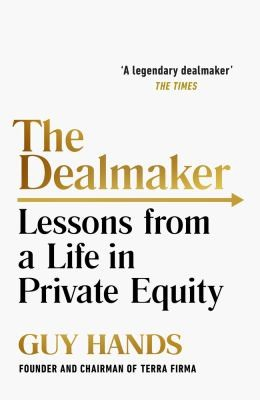

盖伊·汉兹1959年8月出生于伦敦，九岁时因阅读障碍（dyslexia）被送进拉文斯克罗夫特预备学校（Ravenscroft Preparatory School）接受特殊辅导——书中他坦承，直到多年后才知道自己还有"心盲症"（aphantasia），大脑无法在脑海中生成视觉画面。这段经历没有妨碍他考入牛津大学曼斯菲尔德学院攻读哲学、政治学与经济学。1982年，他从高盛的欧洲债券交易员做起，一路升到全球资产结构化小组负责人；1994年跳槽到野村国际，创立主体金融集团（Principal Finance Group）；2002年他将其独立分拆，成立私募股权公司泰丰资本（Terra Firma Capital Partners）。这条履历解释了他与传统企业家传记的差别：汉兹不是从产品或工厂起家，而是先学会给现金流定价、拆分风险，再成为资产所有者。
Portfolio于2021年出版的《The Dealmaker: Lessons from a Life in Private Equity》按时间顺序梳理汉兹在野村和泰丰资本做过的交易。早期方法不是追热门成长公司，而是收购有资产或稳定现金流、管理效率却很低的业务，再用资产证券化降低融资成本：院线Odeon、酒馆、废弃物处理公司Waste Recycling Group、飞机租赁商AWAS和绿色能源都进入过他的组合。这里的"交易"包含三张表——买入价与债务结构、运营改造计划、未来退出者愿意为什么付钱；只讲行业故事而没有现金流覆盖，便不符合他的模型。全书篇幅最大的一段留给那笔几乎让他破产的交易：2007年，泰丰资本以42亿英镑收购百代唱片（EMI）。
EMI一章把模型失效的过程拆得很细。汉兹指控花旗银行家大卫·沃姆斯利（David Wormsley）谎称还有竞标者，诱使泰丰抬高报价，并索赔15亿英镑；2010年11月曼哈顿陪审团裁定花旗胜诉，上诉法院后来推翻裁决、发回重审，但2011年2月资不抵债的EMI已被花旗接管，汉兹称个人损失1.56亿英镑。诉讼不能替代交易复盘：音乐收入受到数字化冲击，收购价高，债务又把纠错时间压缩了。汉兹写下自己忽略反对意见、让成交压力盖过尽调的过程，读者也能看见私募股权的代理问题——出资人、基金经理、贷款银行和被收购公司承担的损失并不相同。
《泰晤士报》的封面推荐语称它是"唯一一本读起来像惊悚小说的私募股权著作"。书中另一条失败线索是汉兹2009年为应对英国50%的最高所得税税率，把税务居所迁到根西岛；多年后他称这项决定是一场"灾难"（disaster），因为公司六十多名员工大多仍在伦敦，他反而成了往返两地的局外人。他也写招聘和组织：阅读障碍迫使他依赖口头讨论、数据和能补足自己弱项的同事，但权力集中后，下属是否敢让负责人停手又成了新的风险。回忆录毕竟由交易本人叙述，花旗争议和EMI责任主要呈现汉兹的视角，不能替代独立案卷。但它少见地把私募股权从"买入—改造—退出"的成功模板拉回到人的判断：杠杆结构、交易对手信息、组织内反对意见和个人生活安排，都可能改变一笔交易的容错空间。把成功交易与EMI逐项对照，比抽取几条领导力口号更接近本书的实际用途：同样检查买价、债务期限、现金流稳定性、运营控制权、退出假设和最坏情景，再看哪些警报曾被负责人忽略。这样得到的是一份失败前检查单，而不是对交易规模的崇拜。